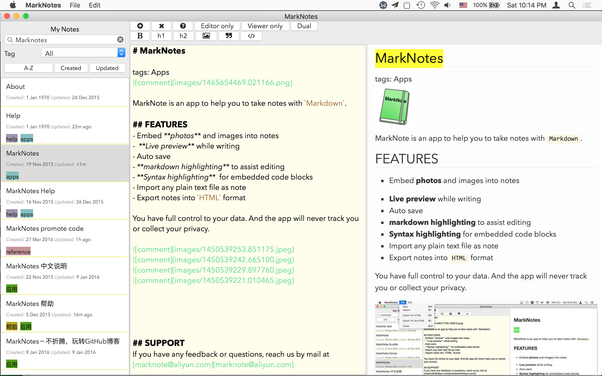
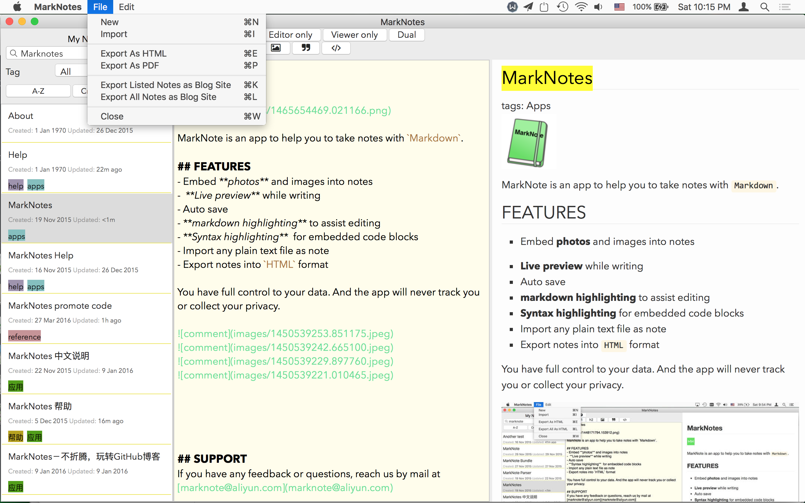
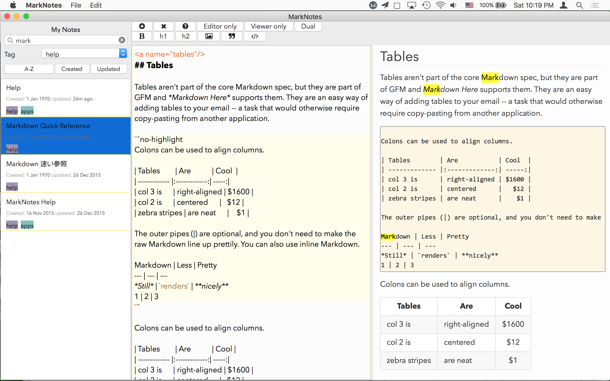

MarkNotes
tags: Apps
Taking notes, and publishing blogs.
MarkNote is an iOS app to help you to take notes with markdown. It can help to manage your notes. You can even use it to maintain a blog site.
FEATURES
Sync your notes into iCloud drive, and share with all your devices. You can read and edit your notes with marknote app on iPhone/iPad
- Embed photos and images into notes
- Live preview while writing
- Auto save
- Markdown highlighting to assist editing
- Syntax highlighting for embedded code blocks
- Import any plain text file as note
- Export notes into HTML pages and build blog site
- Export notes as PDF
- Manage your notes with tags
- Searching your notes
SUPPORT
If you have any feedback or questions, reach us by mail at marknote@aliyun.com



SUPPORT
If you have any feedback or questions, reach us by mail at marknote@aliyun.com